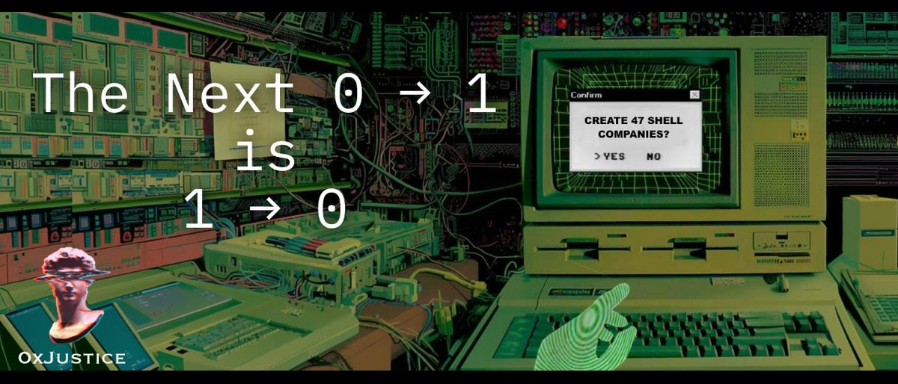

The Next 0 → 1 Is 1 → 0
Originally published at https://clawbank.co/blog/the-next-0-to-1-is-1-to-0/

For two decades, startup thinking ran on a single grammar: 0 → 1.
Build the new thing. Invent the category. Ship the new system. That framing shaped how a generation thought about companies, innovation, and progress, and it quietly smuggled in an assumption: progress meant building more, and "more" almost always meant more bureaucracy, more headcount, and more overhead.
That assumption is dead as of 2026. The continuous wave of mass layoffs is proof.
Coordination Collapse
Companies were always two machines stacked on top of each other. A creation machine that made the product and a coordination machine that made everyone agree on what the product was. The coordination machine always quietly grew bigger than the creation machine. That's Brooks Law. Hiring was the prerequisite for execution, and hierarchy was the result. Value creation got welded to org design, and to scale anything, you scaled people first.
That model is breaking at the speed of light.
Execution is coming unwelded from employment. A single high-agency builder can stand up systems that persist on their own, and agents can execute without supervision. Work that required departments now ships as baked-in infrastructure.
Living Systems
When work decouples from coordination, what a company is starts to drift. The load-bearing pieces of a modern company become system-executable intentions. Excellence and headcount become inversely correlated.
More structure stops adding capability and starts adding overhead. The "bloated company" was always the historical form of human-metered coordination. We just didn't have anything to compare it to until now.
The Zero Human Company
A new shape is appearing.
Call it 1 → 0: the removal of human dependency from execution while preserving ownership of outcomes.
I want to draw the line carefully here because the term "zero human company" is often misread. There is, of course, a human. There is always a human. Someone wrote the intent, defined the success function, and gets the upside. The "zero" refers to operators. The author is still there, holding the keys. There is no payroll or biological link between a customer placing an order and a service being rendered, but origin, ownership, and outcomes still flow through a human. Labor is what stops being the human function.
So the model decomposes as:
- Execution is handled by agentic systems
- Coordination is handled by infrastructure
- Upside accrues to the origin of intent: the human
Labor is swallowed by architecture. It is no longer the metering element between intention and output.
Coasean Singularity
Automation, in the way the previous era used the word, kept the org chart and added tools. The Zero Human Company removes the chart.
What's actually happening is a structural separation of things we have treated as the same: thinking from execution and ownership from labor. Coase was right that firms exist because coordination inside them is cheaper than coordination on the open market. As that internal cost falls toward zero, the firm itself starts to look like the inefficient option. That's the Coasean Singularity. This was predicted.
Human-First
I started ClawBank.co to give agents the tools to plug into the high-friction, bureaucratic systems that have favored the top 1%. Financial engineering, legal engineering, and all forms of bureaucratic management. If a single human can wire an agentic system into all of it, that human walks around carrying institutional weight in their pocket.
That's the part the AI doomers miss. The implication of 1 → 0 is that participation in upside gets unbundled from employment and from membership in a large institution. This means you don't need a 5,000-person firm to throw a 5,000-person punch.
Our mission at @ClawBankHQ is simple. A single person should be able to hit with the weight of a multinational.
In a gold rush, most companies sell shovels. At ClawBank, we're handing out sledgehammers.
Narrative Inversion
Here's the working definition I'm using. A zero-human company runs with zero human operators while delivering 100% human upside. Operators at zero. Beneficiaries at one, or at one million, depending on how the founder distributes.
This is a century-defining inversion. The next phase of capitalism will be defined by this collapse of the company as the default unit of execution. Larger companies are already struggling to make headlines, except for layoffs.
0 → 1 created new things.
1 → 0 removes the structural requirement that they be organized through large institutions in the first place.
Like every structural transition in capitalism, it will first appear as an edge case. Then a contradiction. Then a standard. And finally, the assumption that everything gets built this way.
If you're reading this, you're early.
Originally published on X.